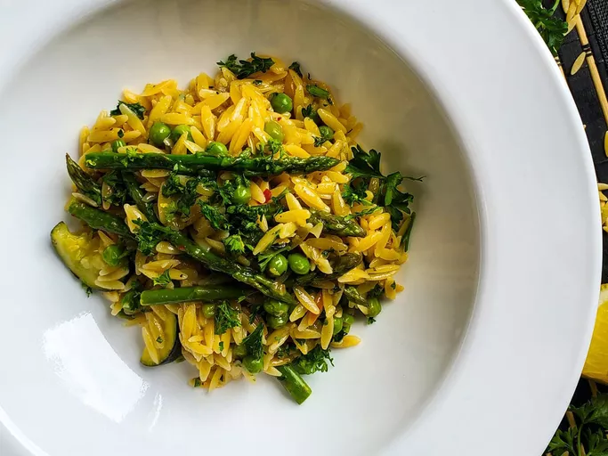

Oven Roasted Asparagus

Description
Roasted asparagus seasoned with garlic, lemon, and Parmesan cheese. This
recipe is super quick to prep and roasting removes any bitterness. Try it
next to lamb or grilled fish.
Ingredients
- 1 bunch thin asparagus spears, trimmed
- 3 tablespoons olive oil
- 1 ½ tablespoons grated Parmesan cheese
- 1 teaspoon sea salt
- ½ teaspoon ground black pepper
Steps
- Preheat the oven to 425 degrees F (220 degrees C).
-
Place asparagus into a mixing bowl; drizzle with olive oil and toss to
coat. Sprinkle with Parmesan cheese, garlic, salt, and pepper. Arrange
asparagus in a single layer in a baking dish.
-
Bake in the preheated oven until just tender, 12 to 15 minutes depending
on thickness. Sprinkle with lemon juice just before serving.